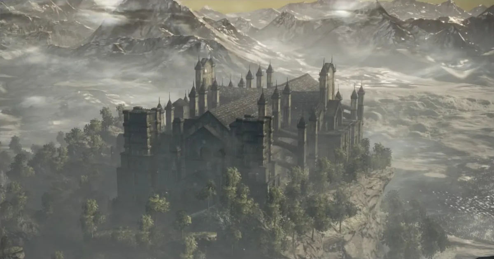
Cathedral of the Deep
A massive Gothic cathedral corrupted by dark forces, where twisted clergy and aberrations roam beneath spectacular stained glass.
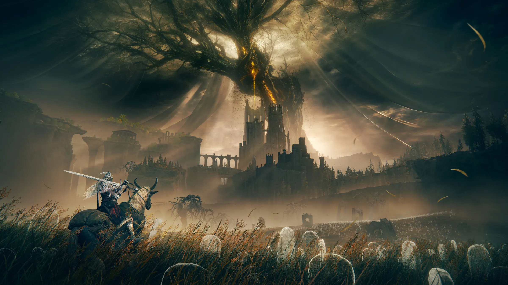
A field guide to the genre
Navigating the World of Soulslikes
A genre has emerged that forever changes how we think about victory and triumph. Soulslike games thrust players into hauntingly beautiful worlds where death isn't simply unavoidable; it's instructive. These meticulously crafted experiences reward patience, perseverance, and precision, delivering a sense of accomplishment few other games can match.
Worlds built to be read as closely as they are explored.

A massive Gothic cathedral corrupted by dark forces, where twisted clergy and aberrations roam beneath spectacular stained glass.
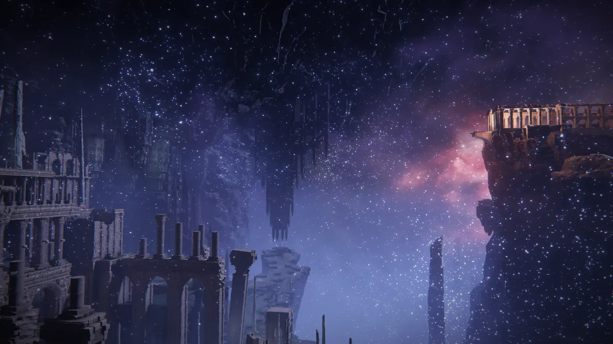
An underground celestial wonder beneath the Mistwood: ancient ruins, eternal stars, and ghostly ancestors in a haunting subterranean realm watched over by giant stags.

The abandoned city of the gods, once bathed in eternal sunset, its white marble spires and grand staircases standing as a monument to faded divinity.
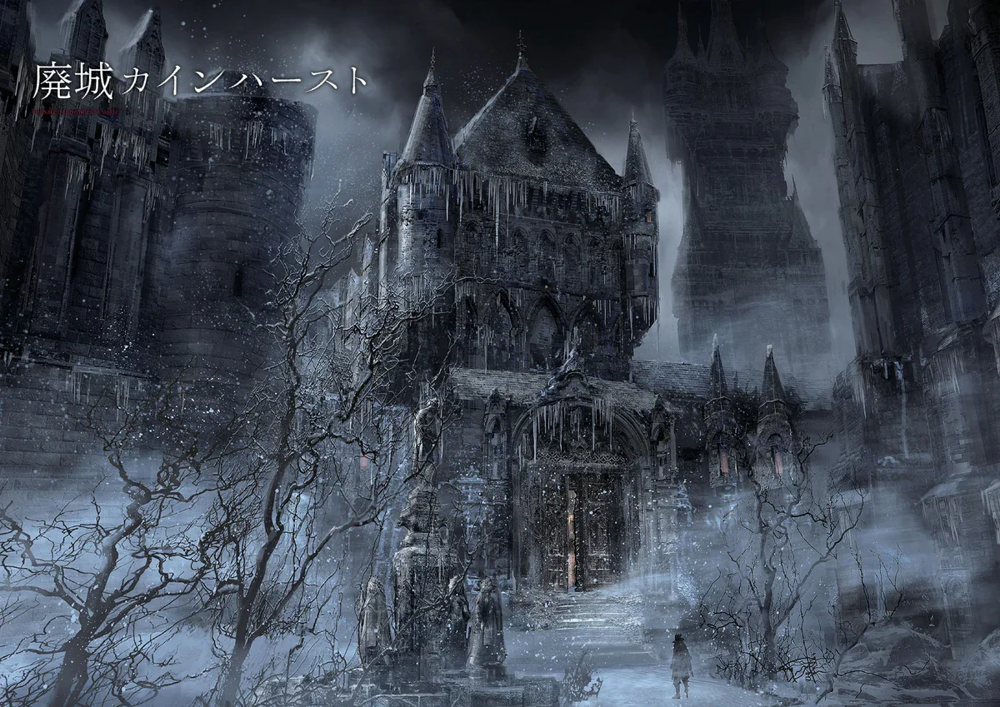
A snow-covered aristocratic fortress frozen in time, where blood-stained opulence tells the tragic tale of the Vileblood lineage.
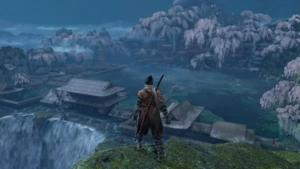
A mystical realm where seekers of immortality have transformed into strange beings amid flowing waters and ornate palace architecture.
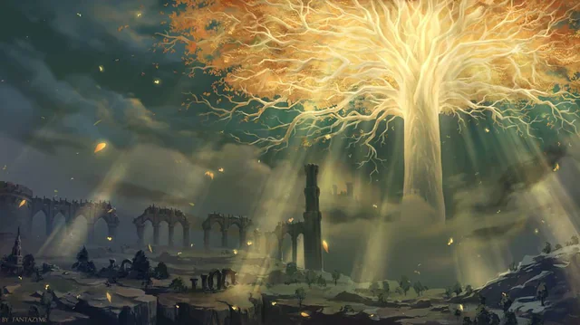
A colossal golden tree visible throughout the Lands Between, its shimmering branches spread across the sky like a divine canopy.
The trials players remember long after the credits roll.

The embodiment of all the Lords who linked the flame, wielding every fighting style from across time in a final, desperate battle.
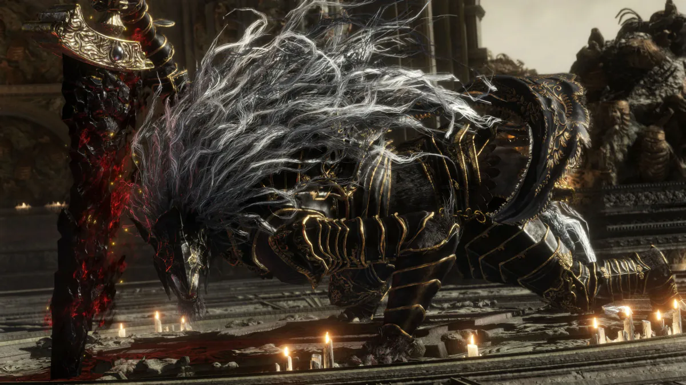
Death's appointed keeper, bound to his beastly form, who unleashes Destined Death with acrobatic fury atop Crumbling Farum Azula.
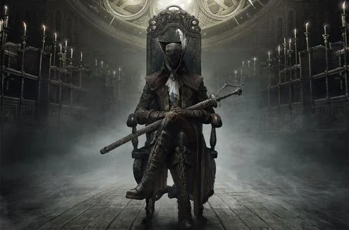
A hunter trapped in the nightmare, whose elegant swordplay and blood arts guard the terrible secrets behind the Astral Clocktower.
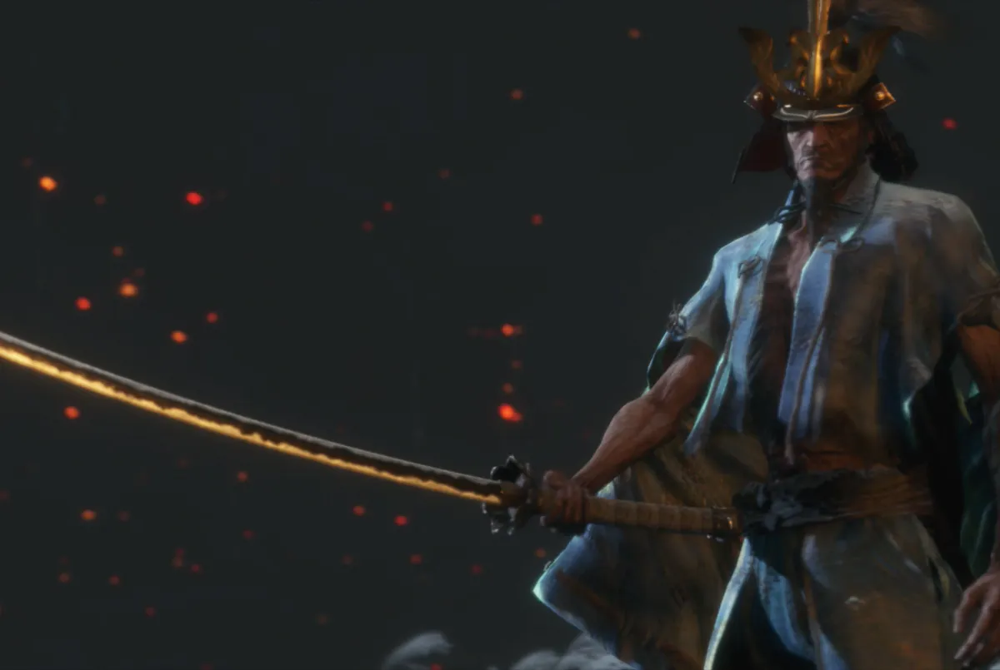
An ancient master who rises for one final duel, testing everything you've learned with sword, spear, and pistol.
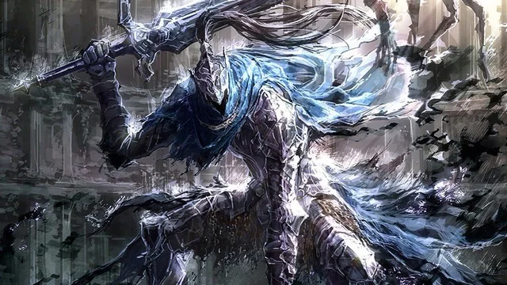
A legendary knight consumed by the very darkness he fought to contain, his broken arm and corrupted armor telling a tale of noble sacrifice in Oolacile.
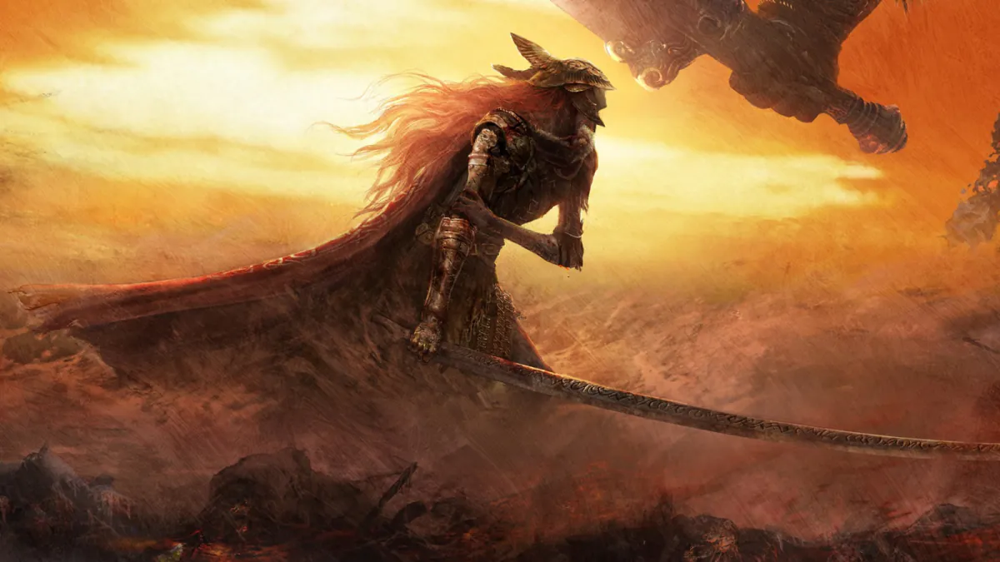
The undefeated swordswoman whose Scarlet Rot devastated an entire region during her legendary duel with Radahn.
Small objects that carry the weight of entire worlds.
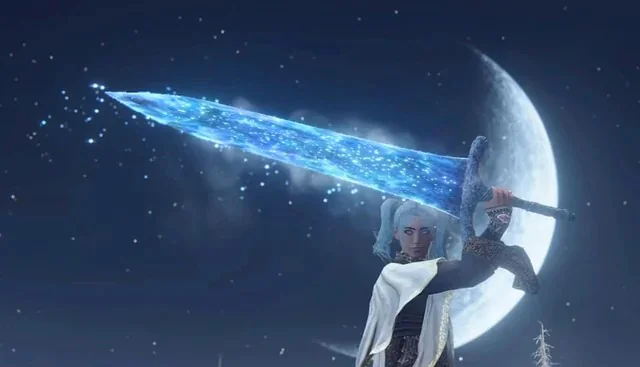
A legendary blade channeling cosmic energy, appearing across generations of FromSoftware games.
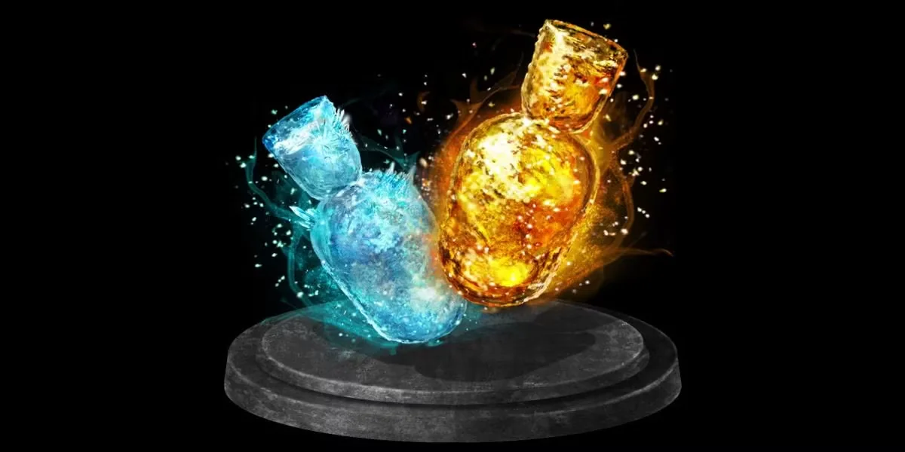
The Undead's crystalline companion, holding golden fire that restores life in even the darkest moments.
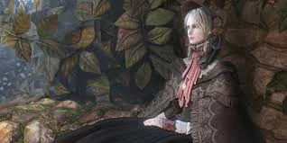
A mysterious porcelain figure who transforms blood echoes into strength for countless hunters.
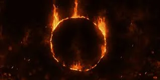
The brand of the Undead, a ring of fire surrounding darkness, marking both curse and destiny.